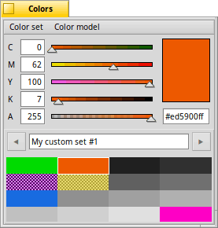
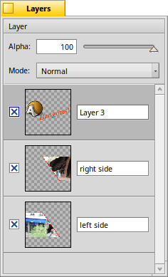

The other windows
Besides the canvas of the main window, there are a number of other windows, you may invoke when needed, or decide to keep open to always be available at a glance. Do see the options of the Settings to make some or all these windows float above the canvas.
ALT TAB will hide/show all these windows for an unobscured view of the canvas.
|  |
ColorsYou can choose a different from the menu: , , , , or . The additional "A" slider is the alpha channel, aka transparency. If you hold CTRL while moving one slider, the others follow it, keeping their relative distance. Holding SHIFT when clicking a slider sets the other sliders to that same value. Under you can create a with 8 to 64 colors, and . The little arrow widgets below the palette (also below the canvas in the main window) let you switch between the available color sets. |
|  |
LayersHere you see all layers stacked up on each other, with the combination of them all and the project name at the top. The checkbox controls if a layer is . The pop-up menus have commands to , , and . You can arrange layers by dragging them around. |
 |
Tools & Tool setupHere you find all the available tools. By changing the window size, you can re-arrange their icons. A right-click opens the tool's setup window. All tools and their settings are described on the pages of The tools. |
 |
BrushesOn first launch, the Brushes window is empty. You need to select the brush tool's setup window and configure it (size, hardness etc.), and then to store the brush. Once you have configured a few different brushes - round, rectangular, big, small, soft, hard - you can quickly switch between them in the Brushes window. To remove a stored brush you can choose to from the menu. |
Back: The settings Next: The tools